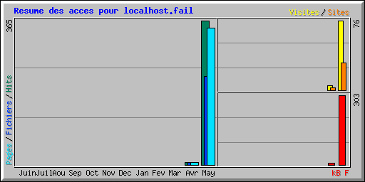

| Résumé par mois | ||||||||||
|---|---|---|---|---|---|---|---|---|---|---|
| Mois | Moyenne journalière | Totaux mensuels | ||||||||
| Hits | Fichiers | Pages | Visites | Sites | kB F | Visites | Pages | Fichiers | Hits | |
| May 2016 | 36 | 22 | 34 | 7 | 30 | 303 | 76 | 347 | 224 | 365 |
| Avr 2016 | 7 | 7 | 7 | 5 | 3 | 7 | 5 | 7 | 7 | 7 |
| Totaux | 310 | 81 | 354 | 231 | 372 | |||||
| Generated by Webalizer Version 2.23 |